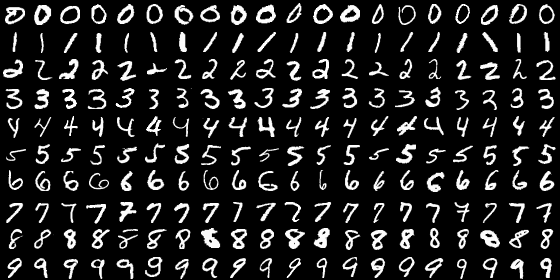
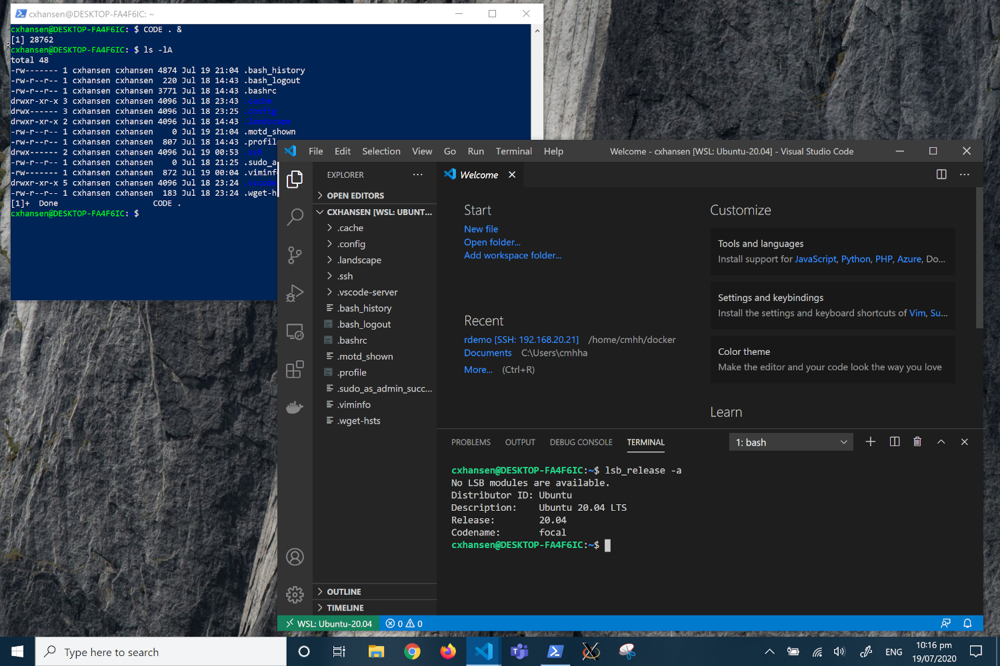
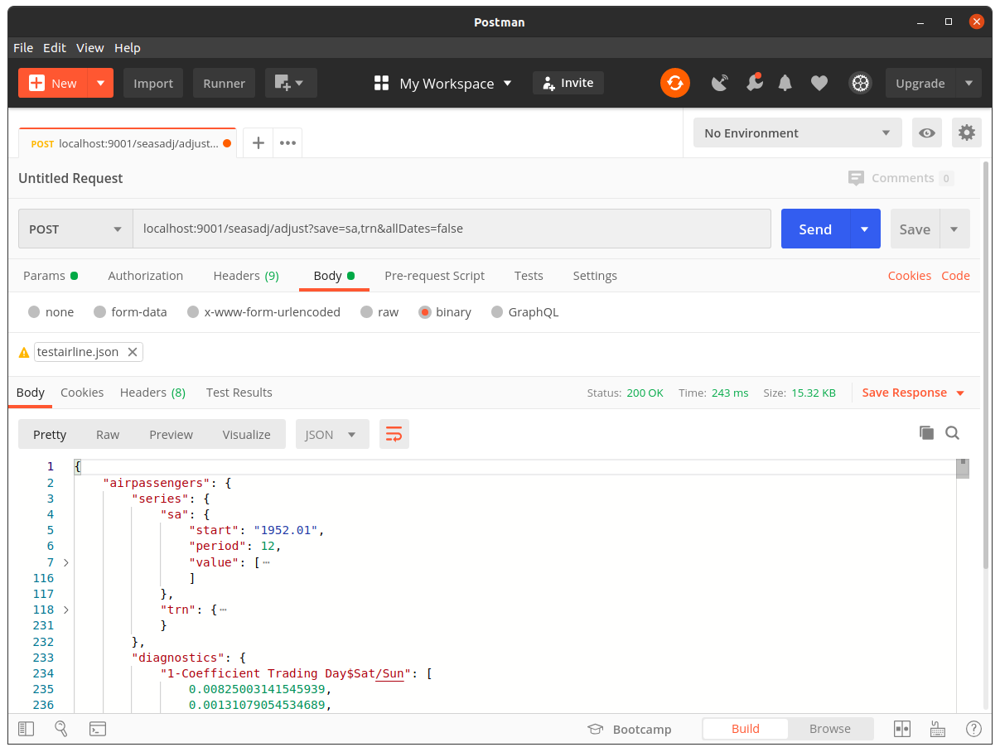

cmhh
cmhh
Categories
Akka
Akka HTTP
Azure
Azure Functions
Deeplearning4j
Docker
GeoServer
GeoSpark
Kafka
LINZ
Mapnik
OSRM
Plumber
PostGIS
PostGraphile
PostgREST
PostgreSQL
QGIS
R
Scala
Sedona
Shiny
Snowflake
Spark
TileStache
Vue.js
WSL
X13-ARIMA-SEATS
akka-http
deeplearning4j
geocoding
geospatial
markdown
marked
microsimulation
online learning
postcode
zero-md
Rendering Markdown on the Web using zero-md
This post demonstrates the use of zero-md to render an external markdown file in a web page, and populate a navigation element.
Mar 23, 2024
13 min
Building a New Zealand Address Geocoder (1)
Building an Address Parser
This post outlines a method for parsing address strings using a bidirectional long short-term memory network.
Apr 2, 2023
14 min
Building a New Zealand Address Geocoder (2)
Building a Geocoding Service
In this post we create an address geocoder using an address parser and a database of addresses.
Apr 2, 2023
14 min
Guitar Chord Transitions with Vue.js
A basic Vue.js component for rendering guitar chord diagrams, and for animating chord transitions.
Aug 29, 2022
8 min
Azure Functions with Scala using the Java Handler
In this post we look at how we create an Azure Function in Scala by making small changes to a basic Java function.
Jun 19, 2022
21 min
Azure Functions with Scala using a Custom Handler
In this post we look at how we can write an Azure Function in
any
language. We do this by creating a simple web service in our language of choice (Scala), and then using it as a custom handler from a host Azure Function.
Jun 19, 2022
8 min
Loading Spatial Data to Snowflake from R
Loading spatial data to Snowflake can be a little awkward. Here we describe a simple and performant approach using the ODBC or JDBC drivers from R.
Apr 17, 2022
6 min
Deploying Shiny Applications
There are many ways we can deploy Shiny applications for external consumption. This post describes several possible methods.
Mar 3, 2022
12 min
Serving PostGIS Features Over HTTP
Does it bother you when you’re forced to fetch features via an API, instead of just downloading a file from a file server? Same! As a solution of sorts, I wondered how easily we could make a service which could be used to download features directly in a requested format.
Feb 25, 2022
11 min
Too Much Shiny?!
Shiny provides a low-entry option for R programmers to develop single-page web applications. But,
in my opinion
, it is over-used. In this post we consider where Shiny might be a good option, and where it might not.
Jan 20, 2022
35 min
Agent Based Simulations with Akka
In this post we attempt to approximate a household survey collection as an agent-based simulation. The simulation designed using the actor model, and implemented in Scala using Akka.
Jan 9, 2022
21 min
Data Services from Existing PostgreSQL Databases
Sometimes creating a bespoke data service is easy enough. But maybe sometimes it’s just easier to expose data that already exists in a database. Here we consider a couple of options, PostGraphile and PostGREST, for doing just that.
Aug 14, 2021
16 min

Online Learning with Akka
Imagine an online learning scenario where we wish to update an existing model using streaming event data, say. Here we consider how we might approach such a problem using the actor model as implemented by Akka.
Aug 8, 2021
10 min
Online Learning with Apache Kafka
Imagine an online learning scenario where we wish to update an existing model using streaming event data, say. Here we consider how we might approach such a problem using Apache Kafka.
Jul 30, 2021
14 min
A Brief Look at Apache Sedona
Apache Sedona, formerly GeoSpark, is a library that let’s us make spatial RDDs and DataFrames in Apache Spark, as well as to run spatial queries. Feature classes can get…
Apr 19, 2021
18 min
Working Productively on Windows Using Windows Subsystem for Linux 2 and Docker
A relatively common scenario in enterprise is to provide users a Windows desktop with a relatively small set of tools, and without administrative access. Depending on the…
Dec 5, 2020
14 min

Docker on Windows with Windows Subsystem for Linux 2
Windows Subsystem for Linux version 2 (WSL2) brings something like a native Linux environment to Windows. And because it’s native, we can even run Docker on WSL2 and access…
Oct 31, 2020
12 min
Using PostGIS as a Spatial Backend for R
Here we look at how we can leverage PostgreSQL and the PostGIS extension to usefully complement R, mostly by offloading large geoprocessing tasks, and as a library for storing large feature classes for shared use across a potentially large userbase.
Oct 31, 2020
14 min

Seasonal Adjustment as a Service
X13-ARIMA-SEATS is a widely used seasonal adjustment program developed by the U.S. Census Bureau. Here we look at how one might go wrapping this program as a web service for remote execution.
Jun 1, 2020
18 min
Building Tile Services on-the-fly with GeoServer
Sending large vector features over-the-wire for use in slippy maps is bad, m’kay. One possible solution is to appeal to a tile service or similar, and here we look at how we might leverage the GeoServer API to enable end-users to quickly deploy their own tile sets on-the-fly.
Sep 17, 2019
15 min
Web Maps and Tiles with QGIS
In this post we look at how we can use QGIS Server to publish a range of services using WMS, WFS and WCS.
Jan 26, 2017
7 min
Serving Geospatial Features with Mapnik and TileStache
When making maps for display on the web, the size of the various objects being rendered can quickly become overwhelming. One solution is to appeal to a tile service, and here we consider one approach using Mapnik and TileStache.
Nov 28, 2016
18 min
Routing in R Using the Open Source Routing Machine (OSRM)
I often find myself needing to establish the travel time or distance between arrays of addresses from R. Here we describe how we can use a local install of Open Source Routing Machine as a solution which is highly performant, and relatively easy to implement.
Nov 27, 2016
5 min
No matching items